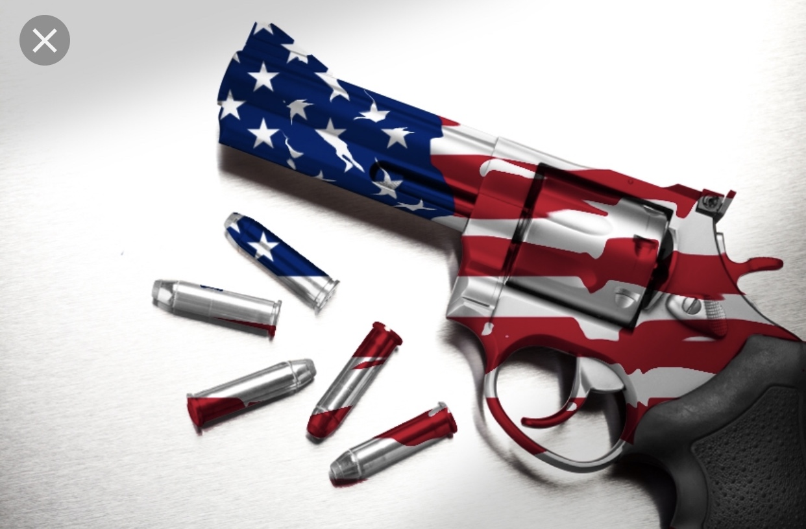
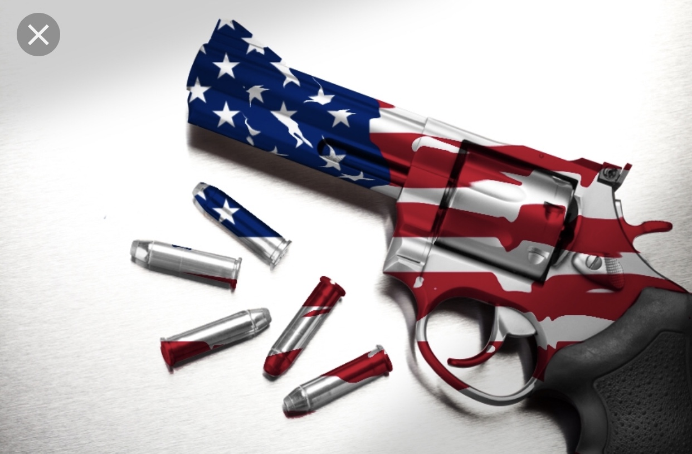

Party Platform
As a party our three main issues are:
Immigrantion:
We believe that illegal immigration has become a major issue in ur country. With that being said, our party is striving to reform the immigration and
citizenship process to make it more efficient and thorough. Throughout this process we will also be focusing on our border security, with more around the clock petrols and new
infrared red cameras throughout the whole souther border. Also we will be implementing stricter laws for people who try and cross our border illegally, with immediate deportation
and many more laws.
Gun Regulation:
There has been a tremendous amount of gun violence in the US and we must control the issue to ensure the safety our citizens while also protecting their 2nd amendment right.
We must ensure that the gun owner is in stable mental health to properly handle a weapon. With this, every existing gun owner must now receive psychological evaluations every 5 years,
and new gun purchasers must also complete a psychological evaluation, and mandatory training for the every gun owned. There will also be mandatory recertification every 10 years and more
extensive background checks.
Environmental Issues:
Our environment is another one of our main concerns. As climate change is occurring, we are focused on the reduction of air, ocean and biodiversity protection. We will set annual CO2
reduction targets for major companies, reduce the amount of oil the US uses in a year, invest more money into the cleanup of the Atlantic and Pacific oceans as well as lakes and ponds.
We will also work together with other nations to reduce the amount of plastic and trash waste, deforestation and overfishing. With the collaboration of our citizens and other countries,
we can protect further damage and work towards sustainability.
 
